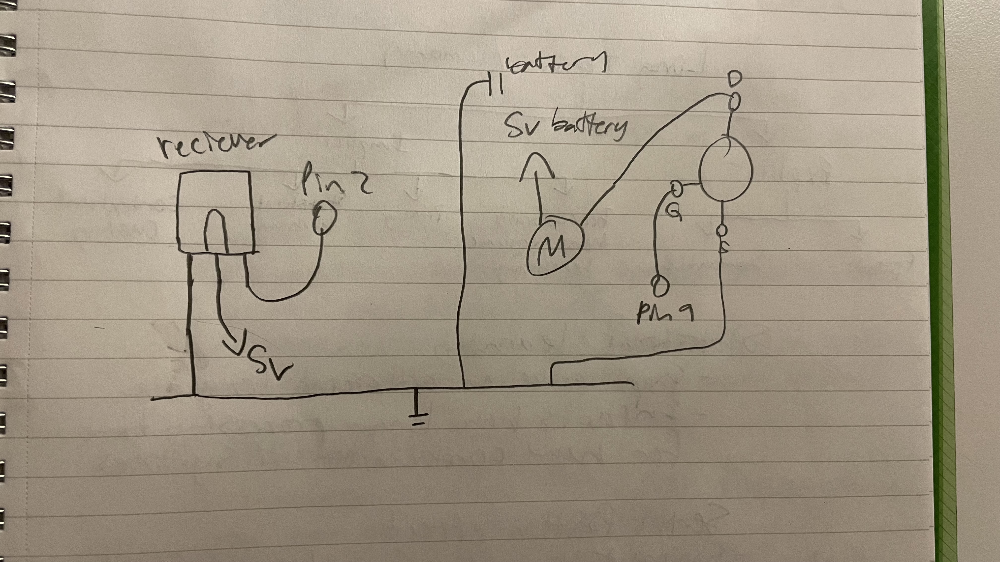
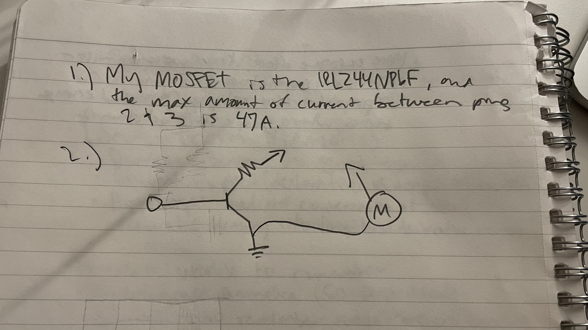

For assignment 5, I decided to make a remote turn my dc motor by pressing the arrows. Below, I have include my schematic, calculations, firmware, my circuits operations, and finally my answers to the additional questions.
For assignment 5, I decided to make a remote turn my dc motor by pressing the arrows. Below, I have include my schematic, calculations, firmware, my circuits operations, and finally my answers to the additional questions.


#include // IRremote library
const int IRpin = 2; // IR receiver connected to D2
const int mosfetPin = 9; // PWM pin connected to MOSFET gate
int motorSpeed = 0; // Motor speed variable (0–255)
// arrows and their hexs
const int UP_BUTTON = 0x9; // Up arrow
const int DOWN_BUTTON = 0x7; // Down arrow
void setup() {
pinMode(mosfetPin, OUTPUT); // Set MOSFET gate as output
Serial.begin(9600); // Start serial monitor for debugging
IrReceiver.begin(IRpin); // Initialize IR receiver
Serial.println("IR Motor Ready");
}
void loop() {
if (IrReceiver.decode()) { // Check if IR signal received
unsigned long code = IrReceiver.decodedIRData.decodedRawData;
// Map remote buttons to motor actions
if (code == UP_BUTTON) { // Increase speed
motorSpeed += 20;
}
if (code == DOWN_BUTTON) { // Decrease speed
motorSpeed -= 20;
}
motorSpeed = constrain(motorSpeed, 0, 255); // Ensure PWM is valid
analogWrite(mosfetPin, motorSpeed); // Output PWM to MOSFET
IrReceiver.resume(); // Prepare to receive next signal
}
}
Unfortunately, there is no video as I could not get my circuit to run.